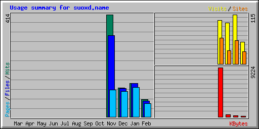

| 按月摘要 | ||||||||||
|---|---|---|---|---|---|---|---|---|---|---|
| 月 | 每日平均 | 每月总计 | ||||||||
| 点击 | 文件 | 页面 | 访问 | 站点 | 千字节 | 访问 | 页面 | 文件 | 点击 | |
| 二月 2015 | 4 | 4 | 3 | 3 | 29 | 178 | 51 | 55 | 65 | 70 |
| 一月 2015 | 4 | 4 | 3 | 3 | 55 | 216 | 115 | 119 | 136 | 136 |
| 十二月 2014 | 3 | 3 | 3 | 3 | 31 | 413 | 96 | 103 | 115 | 118 |
| 十一月 2014 | 15 | 12 | 4 | 3 | 61 | 9224 | 101 | 110 | 330 | 414 |
| 总计 | 10031 | 363 | 387 | 646 | 738 | |||||
| Generated by Webalizer Version 2.01 |